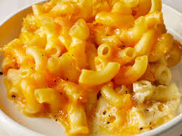
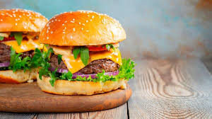

Examples of Western Food

Apple Pie
An apple pie is a pie in which the principal filling is apples. It is often served with whipped cream, ice cream, custard or cheddar cheese. It is generally double-crusted, with pastry both above and below the filling; the upper crust may be solid or latticed

Mac n Cheese
Macaroni and cheese is a pasta dish of macaroni covered in cheese sauce, most commonly cheddar sauce. Its origins trace back to cheese and pasta casseroles in medieval England.

Hamburger
A hamburger consists of fillings—usually a patty of ground meat, typically beef—placed inside a sliced bun or bread roll.